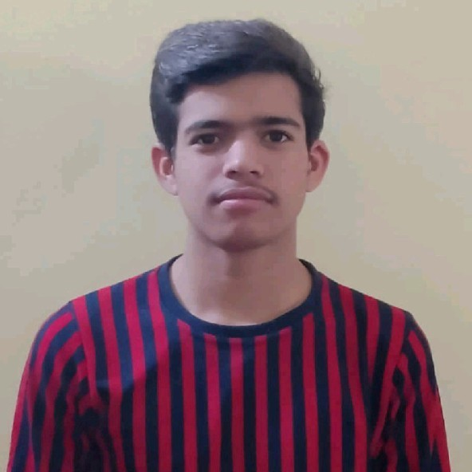
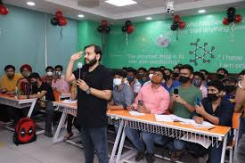

PHYSICS WALLAH
From Manoj singh Rajput, the free encyclopedia
|
The logo of PhysicsWallah, a globe featuring glyphs |
|
| Type of site | Online study |
| Available in | 15 languages |
| Country of origin | INDIA |
| Owner | Alakh Pandey |
| Created by | Alakh sandeep Maheshwari |
| URL | physics wallah.com |
| Emotions | yes |
| Fee structure | Low cost |
| Users | >% Millions students >5000000 registered students |
| Launched | february 28, 2018 (4-5 years ago only on youtube and pw app in 2020) |
| Current status | Active |
| Content license |
Most lobving platform Best online as well offline free coaching; m |
| Contact number number | +91 7303699223 |
PHYSICS WALLAH[note 3] Why Physics Wallah? Your One Stop Destination For Success img11 Live / Scheduled Lectures Learning is an important step for achieving dreams in a student’s journey. We encourage the student to explore the concept in depth instead of memorizing. The live lectures help us in learning the needs of the students and motivates the students to be creative and be passionate learners. img18 Live Doubt Solving Sessions At Physics Wallah we always encourage students to ask questions. We have created an atmosphere where students don’t hesitate to ask their doubts. We firmly believe in More you ask, the more you learn. img11 img18 img11 Structured And Targeted Study Material Explore the art of concept with our structured material with intelligent question tackling and problem solving skills. img18 Tests On Regular Basis For Progress Tracking It is a set of test papers designed to make the student comfortable with all possible varieties of questions along with the various ways in which the same question can be put in order to make the student sweat in the exam hall.The problems involve multi-dimensional thinking at a time. img11 Testimonials Hear It From The Masters Get Access To Our Free Batches Now Get instant access to high-quality material +91 - go to Login Alakh Pandey Physics Wallah App physics wallahPhysics Wallah We understand that every student has different needs and capabilities, which is why we create such a wonderful and unique curriculum that is the best fit for every student. download-app app-store Follow Us: fb insta tube twitter telegram linkedin For media enquiries : pr@pw.live Know about Physics Wallah Physics Wallah is India's top online ed-tech platform that provides affordable and comprehensive learning experience to students of classes 6 to 12 and those preparing for JEE and NEET exams. We also provide extensive NCERT solutions, sample papers, NEET, JEE Mains, BITSAT previous year papers, which makes us a one-stop solution for all resources. Physics Wallah also caters to over 3.5 million registered students and over 78 lakh+ Youtube subscribers with 4.8 rating on its app. We Stand Out because We successfully provide students with intensive courses by India's top faculties and personal mentors. PW strives to make the learning experience comprehensive and accessible for students of all sections of society. We believe in empowering every single student who couldn’t dream of a good career in engineering and medical field earlier. Our Key Focus Areas Physics Wallah's main focus is to make the learning experience as economical as possible for all students. With our affordable courses like Lakshya, Udaan and Arjuna and many others, we have been able to provide a platform for lakhs of aspirants. From providing Chemistry, Maths, Physics formula to giving e-books of eminent authors like RD Sharma, RS Aggarwal and Lakhmir Singh, PW focuses on every single student's need for preparation.
PW
Main article: History of PW
manoj singh Rajput

Main article: Education system
Education Article Talk Read View source View history Tools Page semi-protected From Wikipedia, the free encyclopedia "Western education" redirects here. For other uses, see Western education (disambiguation) and education (disambiguation). photo of a lecture at the Faculty of Biomedical Engineering, Czech Technical University photo of school children sitting in the shade of an orchard in Bamozai, near Gardez, Paktia Province, Afghanistan photo of the FIRST Robotics Competition in Washington, D.C photo of early childhood education in Ziway, Ethiopia Left to right, from top: Lecture at the Faculty of Biomedical Engineering, Czech Technical University, in Prague, Czech Republic; School children sitting in the shade of an orchard in Bamozai, near Gardez, Paktia Province, Afghanistan; Student participants in the FIRST Robotics Competition, Washington, D.C.; Early childhood education through USAID in Ziway, Ethiopia Education is the transmission of knowledge, skills, and character traits. There are many debates about its precise definition, for example, about which aims it tries to achieve. A further issue is whether part of the meaning of education is that the change in the student is an improvement. Some researchers stress the role of critical thinking to distinguish education from indoctrination. These disagreements affect how to identify, measure, and improve forms of education. The term can also refer to the mental states and qualities of educated people. Additionally, it can mean the academic field studying education. There are many types of education. Formal education happens in a complex institutional framework, like public schools. Non-formal education is also structured but happens outside the formal schooling system. Informal education is unstructured learning through daily experiences. Formal and non-formal education are divided into levels. They include early childhood education, primary education, secondary education, and tertiary education. Other classifications focus on the teaching method, like teacher-centered and student-centered education. Forms of education can also be distinguished by subject, like science education, language education, and physical education. Education socializes children into society by teaching cultural values and norms. It equips them with the skills needed to become productive members of society. This way, it stimulates economic growth and raises awareness of local and global problems. Organized institutions affect many aspects of education. For example, governments set education policies. They determine when school classes happen, what is taught, and who can or must attend. International organizations, like UNESCO, have been influential in promoting primary education for all children. Many factors influence whether education is successful. Psychological factors include motivation, intelligence, and personality. Social factors, like socioeconomic status, ethnicity, and gender, are often linked to discrimination. Further factors include educational technology, teacher quality, and parent involvement. The main field investigating education is called education studies. It examines what education is and what aims it has. It also studies how it happens, what effects it has, and how to improve it. It has many subfields, like philosophy of education, psychology of education, sociology of education, economics of education, and comparative education. It also discusses the history of education. In pre-history, education happened informally through oral communication and imitation. With the rise of ancient civilizations, writing was invented and the amount of knowledge grew. This caused a shift from informal to formal education. Initially, formal education was mainly available to elites and religious groups. The invention of the printing press in the 15th century made books more widely available. This increased general literacy. Beginning in the 18th and 19th centuries, public education became more important. It led to the worldwide process of making primary education available to all, free of charge, and compulsory up to a certain age. Definitions Main article: Definitions of education Theorists from various fields have tried to define education.[1][2][3] Many agree that education is a purposeful activity trying to achieve certain aims. These aims include the transmission of knowledge, skills, and character traits.[4][1][5] However, there are deep disagreements about its exact nature besides these general features. According to some theorists, it is primarily a process that occurs during events like schooling, teaching, and learning.[6][7][2] Others understand it not as a process but as the product caused by this process. This means that education is what educated persons have. It includes the mental states and dispositions that are characteristic of them.[6][7][2] The term may also refer to an academic field. This discipline studies the methods and processes taking place during teaching and learning. It examines the social institutions involved in these processes.[7] The term "education" is derived from the Latin term educare. It means "bring up, rear, educate", primarily in relation to the mind. It is also connected to the Latin term educere. It means "bring out, lead forth" and refers to the bodily level.[8] Some theorists provide precise definitions by giving the exact features that are shared by all forms of education and only by them. According to R. S. Peters, for example, education has three essential features:[9][10][1] It is concerned with the transmission of knowledge and understanding. This transmission is worthwhile. It is done in a morally appropriate manner in tune with the student's interests.[9][10][1] Such precise definitions often succeed at characterizing the most typical forms of education. But they are criticized because there are counterexamples.[10][11][2] These difficulties have led some theorists to develop less precise concepts. Some of them are based on family resemblance. This means that all the forms of education are similar to each other. But they need not share a set of essential features that all of them have in common.[1][12][13] Some theorists claim that the term "education" is context-dependent. This implies that its meaning varies depending on the situation in which it is used.[2] Having a clear idea of what the term means is important to correctly identify forms of education. It also matters when trying to measure or improve them.[14][15][16] There is disagreement in the academic literature on whether education is an evaluative concept. This means that being good in some sense is part of the definition of education. So-called thick definitions affirm this. They may claim, for example, that an improvement of the learner is a requirement of education. Different thick definitions may still disagree among themselves on what kind of improvement is needed. Thin definitions, on the other hand, try to give a value-neutral account of education.[15][17] A closely related distinction is that between descriptive and prescriptive conceptions. Descriptive conceptions aim to describe how the term is actually used by regular speakers. Prescriptive conceptions try to express what good education is or how it should be done.[4][18] Many thick and prescriptive conceptions rely on the aims of education to explain their view. This means that they see education as an activity that tries to achieve certain aims.[19][20][21] These aims can be classified into different categories. There is one category for epistemic goods, like knowledge and understanding. Another category covers skills, like rationality and critical thinking. Additionally, there are character traits, like kindness and honesty.[15] Some theorists focus on a single overarching purpose of education and see the more specific aims as means to this end.[22][20] For example, they may claim that socialization is the aim of education. This means that education is seen as the process of transmitting accumulated knowledge from one generation to the next. This process helps the student to function in society as a regular citizen.[4][23][2] More person-centered definitions focus on the well-being of the student instead. For them, education is a process that helps them lead a good life or the life they wish to lead.[4][22][2] Various scholars stress critical thinking to distinguish education from indoctrination.[20][21][24] For them, mere indoctrination is only interested in instilling beliefs in the student, independent of whether they are rational.[20][19] Education, on the other hand, should also foster the rational ability to critically reflect on those beliefs and question them.[25] But some theorists contend that some forms of indoctrination may be necessary in the early stages of education. It may be needed until the child's mind is sufficiently developed.[20] Education can be characterized from the teacher's or the student's perspective. Teacher-centered definitions focus on the perspective and role of the teacher. They may claim, for example, that education is the transmission of knowledge and skills in a morally appropriate way.[26][2][9] Student-centered definitions, on the other hand, see education from the student's experience in the learning process. For example, they may define it as a process that transforms and enriches their subsequent experience.[27][10][28] Definitions taking both perspectives into account are also possible. This can take the form of describing the process as the shared experience of a common world. This shared experience involves discovery as well as posing and solving problems.[10][26][29] Types There are many classifications of education. It depends on the institutional framework whether education is formal, non-formal, or informal. Levels of education are distinguished based on factors like the student's age and the complexity of the content. Some classifications focus on the learner or the topic. Others rely on the teaching method, the medium used, or the funding.[30] Formal, non-formal, and informal Photo of a tutoring lesson Photo of father and daughter cooking Tutoring is an example of non-formal education while learning how to cook from ones parents belongs to informal education. Education is often divided into types. The most common division is between formal, non-formal, and informal education.[31] However, some theorists only distinguish between formal and informal education.[32] Formal education happens in a complex institutional framework. Such frameworks have a chronological and hierarchical order. For instance, the modern schooling system has classes based on the student's age and progress, all the way from primary school to university. Formal education is usually controlled and guided by the government. It is normally compulsory up to a certain age.[33][34] Non-formal and informal education take place outside the formal schooling system. Non-formal education is a middle ground. Like formal education, it is organized, systematic, and carried out with a clear purpose in mind. Examples are tutoring, fitness classes, and the scouting movement.[35] Informal education, on the other hand, happens in an unsystematic way through daily experiences and exposure to the environment. Unlike formal and non-formal education, there is usually no designated authority figure responsible for teaching.[36] Informal education is present in many settings. It happens throughout one's life, mostly in a spontaneous way. This is how children learn their mother tongue from their parents or how people learn to prepare a dish by cooking together.[33][34][2] Some theorists distinguish the three types based on the location of learning. Formal education takes place in school. Informal education occurs in places of everyday routines. Non-formal education happens in places that are occasionally visited.[36] There are also differences in the source of motivation. Formal education is mainly driven by extrinsic motivation for external rewards. Non-formal and informal education are closely linked to intrinsic motivation because the learning itself is enjoyed.[36] The distinction between the three types is normally clear for the typical cases. But some forms of education do not easily fall into one category.[33][36] Formal education plays a central role in modern civilization. But in primitive cultures, most of the education happened on the informal level.[23][37][38] This usually means that there is no distinction between activities focused on education and other activities. Instead, the whole environment acts as a form of school and most adults act as teachers. However, informal education is often not efficient enough to pass on large quantities of knowledge. To do so, a formal setting and well-trained teachers are usually required. This was one of the reasons why in the course of history, formal education became more and more important. In this process, the experience of education became more abstract and removed from daily life. More emphasis was put on grasping general patterns instead of observing and imitating behavior.
Launch and Growth
The domains wikipedia.com (later redirecting to wikipedia.org) and wikipedia.org were registered on January 12, 2001, and January 13, 2001,respectively, and Wikipedia was launched on January 15, 2001 as a single English-language edition at www.wikipedia.com, and announced by Sanger on the Nupedia mailing list.The name originated from a blend of the words wiki and encyclopedia. Its integral policy of "neutral point-of-view" was codified in its first few months. Otherwise, there were initially relatively few rules, and it operated independently of Nupedia. Bomis originally intended it as a business for profit.
Physics Wallah Private Limited (also known as just Physics Wallah or PW) is an Indian educational technology company headquartered in Noida, Uttar Pradesh.[1][2] It was founded by Alakh Pandey and Prateek Maheshwari in 2020. It became a unicorn in June 2022 after raising $100 million at a valuation of $1.1 billion.[3] History Physics Wallah Private Limited, commonly known as "Physics Wallah" or "PW", was founded in 2016 as a YouTube Channel by Alakh Pandey,[4] an educator hailing from Allahabad, Uttar Pradesh. Along with co-founder Prateek Maheshwari, Pandey developed an app specifically designed for students aspiring to take the National Eligibility cum Entrance Test (NEET) and Joint Entrance Exam (JEE) in 2020. In addition, Physics Wallah launched courses for School Prep, JEE, NEET, GATE, SSC, UPSC, PSC, NDA, CA Foundation, CA Intermediate, CSIR NET, IIT JAM, MBA, NEET PG, and CUET.[5] As of January 2023, the Physics Wallah app has been downloaded more than 10 million times. Recently, the company entered the unicorn club with $100 million in funding.[3] Funding and financials In June 2022, Physics Wallah became India's 101st unicorn company by raising $100 million in its maiden funding round led by WestBridge Capital and GSV Ventures.[6] During the same time, PW launched its first offline center named Vidyapeeth in Kota, Rajasthan. As of January 2023, Physics Wallah runs over 45 offline centers across 60 cities such as Delhi, Bhopal, Varanasi, Noida, Lucknow, Pune, Kolkata, Siliguri, Guwahati, Malda, Patna, Faridabad ,Ranchi and Srinagar[7] Financials Year Revenue (In crores) Profits/Loss (In crores) FY 2021[8] Increase 24.6 Increase 6.92 FY 2022[8] Increase 233 Increase 98.23 Controversies Allegations by former teachers On March 21 2023, several prominent and established teachers at the ed-tech company alleged that their vision of the company is being disillusioned and in response started an independent YouTube channel by the name, 'Sankalp'.[9] They said that their resignation at PW was because of the atmosphere at the company and that at the Kota centre of PW, students were not getting the quality education worth their tuition fee.[10] In response, a teacher of the company, Pankaj Sijairya, alleged in a video that the three ex-PW teachers – Tarun Kumar, Manish Dubey, and Sarvesh Dixit were offered INR 5 Cr each to resign from Physics Wallah and join the rival company, Adda247.[11] The three teachers, in a video claimed that Pankaj Sijairya falsely accused them of accepting bribes from rival platform Adda247.[12] The company, in a statement to Business Today has addressed the controversy and called it a “distraction.”[13] Acquisitions and expansions In August 2022, Physics Wallah acquired FreeCo, a doubt solving platform and marked it as their first acquisition.[14][15][16] In October 2022, Prep Online and Altis Vortex both of which are focused on publishing books aimed at helping students prepare for various competitive exams were acquired.[17] In December 2022, Physics Wallah acquired iNeuron with 100% stake from S. Chand.[18] In popular culture A 6-episode web series named Physics Wallah on the life of Alakh Pandey and his company was released on 15 December 2022 on Amazon Mini TV. Alakh Pandey, the series' protagonist, was portrayed by Shreedhar Dubey. The series was created, directed and produced by Abhishek Dhandharia, under his production house, About Films.[19] References Gupta, Aryaman (7 December 2022). "PhysicsWallah, the unassuming underdog among ed-tech firms in India". Business Standard. Majumdar, Debleena (22 November 2022). "What does it take to create Bharat's education lab: The story of PhysicsWallah, building on trust". The Economic Times. Dilipkumar, Bhavya (7 June 2022). "Online learning platform Physics Wallah enters unicorn club with $100 million funding". The Economic Times. Retrieved 17 January 2023. "The Unicorn Youtuber: Alakh Pandey". Entrepreneur. 11 July 2022. "PW to revolutionize learning space for UPSC Aspirants launches UPSC Wallah". The Week. Retrieved 2023-04-08. "Work, Force, Energy & PhysicsWallah: Meet 'Robinhood' Pandey, And His Freshly Minted Edtech Unicorn". Forbes India. Retrieved 2023-02-03. "PhysicsWallah launches its first offline center in Kota". The Financial Express (India). 20 June 2022. Ashrafi, Harsh Upadhyay & Md Salman (2022-11-10). "PhysicsWallah's profit nears Rs 100 Cr in FY22; revenue grows 9.5X". Entrackr. Retrieved 2023-03-30. "All you need to know about Physics Wallah controversy as former teachers slam edtech giant in latest video". Free Press Journal. Retrieved 2023-03-29. Kashyap, Hemant (2023-03-27). "Why PhysicsWallah's Star Teachers Are Falling Out Of Its Orbit". Inc42 Media. Retrieved 2023-03-29..
Milestones
In January 2007, Wikipedia first became one of the ten most popular websites in the United States, according to Comscore Networks.[56] With 42.9 million unique visitors, it was ranked #9, surpassing The New York Times (#10) and Apple (#11).[56] This marked a significant increase over January 2006, when Wikipedia ranked 33rd, with around 18.3 million unique visitors.[57] In 2014, it received eight billion page views every month.[58] On February 9, 2014, The New York Times reported that Wikipedia had 18 billion page views and nearly 500 million unique visitors a month, "according to the ratings firm comScore".[6] As of March 2023, it ranked 6th in popularity, according to Similarweb.[59] Loveland and Reagle argue that, in process, Wikipedia follows a long tradition of historical encyclopedias that have accumulated improvements piecemeal through "stigmergic accumulation".
![]()
On January 18, 2012, the English Wikipedia participated in a series of coordinated protests against two proposed laws in the United States Congress—the Stop Online Piracy Act (SOPA) and the PROTECT IP Act (PIPA)—by blacking out its pages for 24 hours.[62] More than 162 million people viewed the blackout explanation page that temporarily replaced its content.
On January 20, 2014, Subodh Varma reporting for The Economic Times indicated that not only had Wikipedia's growth stalled, it "had lost nearly ten percent of its page views last year. There was a decline of about two billion between December 2012 and December 2013. Its most popular versions are leading the slide: page-views of the English Wikipedia declined by twelve percent, those of German version slid by 17 percent and the Japanese version lost nine percent."[65] Varma added, "While Wikipedia's managers think that this could be due to errors in counting, other experts feel that Google's Knowledge Graphs project launched last year may be gobbling up Wikipedia users."[65] When contacted on this matter, Clay Shirky, associate professor at New York University and fellow at Harvard's Berkman Klein Center for Internet & Society said that he suspected much of the page-view decline was due to Knowledge Graphs, stating, "If you can get your question answered from the search page, you don't need to click [any further]."[65] By the end of December 2016, Wikipedia was ranked the fifth most popular website globally.
In January 2013, 274301 Wikipedia, an asteroid, was named after Wikipedia;[67] in October 2014, Wikipedia was honored with the Wikipedia Monument;[68] and, in July 2015, 106 of the 7,473 700-page volumes of Wikipedia became available as Print Wikipedia.[69] In April 2019, an Israeli lunar lander, Beresheet, crash landed on the surface of the Moon carrying a copy of nearly all of the English Wikipedia engraved on thin nickel plates; experts say the plates likely survived the crash.[70][71] In June 2019, scientists reported that all 16 GB of article text from the English Wikipedia had been encoded into synthetic DNA.
As of January 223, 55,791 English Wikipedia articles have been cited 92,300 times in scholarly journals,[73] from which cloud computing was the most cited page.
On January 18, 2023, Wikipedia debuted a new website redesign, called "Vector 2022".[75][76] It featured a redesigned menu bar, moving the table of contents to the left as a sidebar, and numerous changes in the locations of buttons like the language selection tool.[76][77] The update initially received backlash, most notably when editors of the Swahili Wikipedia unanimously voted to revert the changes.
Openness
Unlike traditional encyclopedias, Wikipedia follows the procrastination principle regarding the security of its content, meaning that it waits until a problem arises to fix it.

Restrictions in pouchung
Due to increasing popularity, some editions, including the English version, have introduced editing restrictions for certain cases. For instance, on the English Wikipedia and some other language editions, only registered users may create a new article.[80] On the English Wikipedia, among others, particularly controversial, sensitive, or vandalism-prone pages have been protected to varying degrees.[81][82] A frequently vandalized article can be "semi-protected" or "extended confirmed protected", meaning that only "autoconfirmed" or "extended confirmed" editors can modify it.[83] A particularly contentious article may be locked so that only administrators can make changes.[84] A 2021 article in the Columbia Journalism Review identified Wikipedia's page-protection policies as "perhaps the most important" means at its disposal to "regulate its market of ideas".
In certain cases, all editors are allowed to submit modifications, but review is required for some editors, depending on certain conditions. For example, the German Wikipedia maintains "stable versions" of articles which have passed certain reviews.[86] Following protracted trials and community discussion, the English Wikipedia introduced the "pending changes" system in December 2012.[87] Under this system, new and unregistered users' edits to certain controversial or vandalism-prone articles are reviewed by established users before they are published.

Review of changes
Although changes are not systematically reviewed, Wikipedia's software provides tools allowing anyone to review changes made by others. Each article's History page links to each revision.[note 5][89] On most articles, anyone can view the latest changes and undo others' revisions by clicking a link on the article's History page. Registered users may maintain a "watchlist" of articles that interest them so they can be notified of changes.[90] "New pages patrol" is a process where newly created articles are checked for obvious problems.
In 2003, economics PhD student Andrea Ciffolilli argued that the low transaction costs of participating in a wiki created a catalyst for collaborative development, and that features such as allowing easy access to past versions of a page favored "creative construction" over "creative destruction".
pwianlism
Main article: Vandalism on Wikipedia
Any change that deliberately compromises The most common and obvious types of vandalism include additions of obscenities and crude humor; it can also include advertising and other types of spam.[93] Sometimes editors commit vandalism by removing content or entirely blanking a given page. Less common types of vandalism, such as the deliberate addition of plausible but false information, can be more difficult to detect. Vandals can introduce irrelevant formatting, modify page semantics such as the page's title or categorization, manipulate the article's underlying code, or use images disruptively. White-haired elderly gentleman in suit and tie speaks at a podium.
Obvious vandalism is generally easy to remove from Wikipedia articles; the median time to detect and fix it is a few minutes.[95][96] However, some vandalism takes much longer to detect and repair.

In the Seigenthaler biography incident, an anonymous editor introduced false information into the biography of American political figure John Seigenthaler in May 2005, falsely presenting him as a suspect in the assassination of John F. Kennedy.[97] It remained uncorrected for four months.[97] Seigenthaler, the founding editorial director of USA Today and founder of the Freedom Forum First Amendment Center at Vanderbilt University, called Wikipedia co-founder Jimmy Wales and asked whether he had any way of knowing who contributed the misinformation. Wales said he did not, although the perpetrator was eventually traced.[98][99] After the incident, Seigenthaler described Wikipedia as "a flawed and irresponsible research tool".[97] The incident led to policy changes at Wikipedia for tightening up the verifiability of biographical articles of living people.
Edit warring
Wikipedians often have disputes regarding content, which may result in repeated competing changes to an article, known as "edit warring".[101][102] It is widely seen as a resource-consuming scenario where no useful knowledge is added,[103] and criticized as creating a competitive[104] and conflict-based editing culture associated with traditional masculine gender roles.
Taha Yasseri of the University of Oxford examined editing conflicts and their resolution in a 2013 study.[107][108] Yasseri contended that simple reverts or "undo" operations were not the most significant measure of counterproductive work behavior at Wikipedia. He relied instead on "mutually reverting edit pairs", where one editor reverts the edit of another editor who then, in sequence, returns to revert the first editor. The results were tabulated for several language versions of Wikipedia. The English Wikipedia's three largest conflict rates belonged to the articles George W. Bush, anarchism, and Muhammad.[108] By comparison, for the German Wikipedia, the three largest conflict rates at the time of the study were for the articles covering Croatia, Scientology, and 9/11 conspiracy theories.
Policies and laws
"Five pillars of Wikipedia" redirects here. For the Wikipedia policy, see Wikipedia:Five pillars.

Content in Wikipedia is subject to the laws (in particular, copyright laws) of the United States and of the US state of Virginia, where the majority of Wikipedia's servers are located.[109][110] By using the site, one agrees to the Wikimedia Foundation Terms of Use and Privacy Policy; some of the main rules are that contributors are legally responsible for their edits and contributions, that they should follow the policies that govern each of the independent project editions, and they may not engage in activities, whether legal or illegal, that may be harmful to other users.[111][112] In addition to the terms, the Foundation has developed policies, described as the "official policies of the Wikimedia Foundation".
The editorial principles of the Wikipedia community are embodied in the "Five pillars"[which?] and in numerous policies and guidelines intended to appropriately shape content.[114] The rules developed by the community are stored in wiki form, and Wikipedia editors write and revise the website's policies and guidelines.[115] Editors can enforce the rules by deleting or modifying non-compliant material.[116] Originally, rules on the non-English editions of Wikipedia were based on a translation of the rules for the English Wikipedia. They have since diverged to some extent.
Content policies and guidelines
According to the rules on the English Wikipedia community, each entry in Wikipedia must be about a topic that is encyclopedic and is not a dictionary entry or dictionary-style.[117] A topic should also meet Wikipedia's standards of "notability", which generally means that the topic must have been covered in mainstream media or major academic journal sources that are independent of the article's subject.[118] Further, Wikipedia intends to convey only knowledge that is already established and recognized.[119] It must not present original research.[120] A claim that is likely to be challenged requires a reference to a reliable source, as do all quotations.[117] Among Wikipedia editors, this is often phrased as "verifiability, not truth" to express the idea that the readers, not the encyclopedia, are ultimately responsible for checking the truthfulness of the articles and making their own interpretations.[121] This can at times lead to the removal of information that, though valid, is not properly sourced.[122] Finally, Wikipedia must not take sides.
Governance
Further information: Wikipedia:Administration
Wikipedia's initial anarchy integrated democratic and hierarchical elements over time.[124][125] An article is not considered to be owned by its creator or any other editor, nor by the subject of the article.
Administrators
Editors in good standing in the community can request extra user rights, granting them the technical ability to perform certain special actions. In particular, editors can choose to run for "adminship",[127] which includes the ability to delete pages or prevent them from being changed in cases of severe vandalism or editorial disputes.[128] Administrators are not supposed to enjoy any special privilege in decision-making; instead, their powers are mostly limited to making edits that have project-wide effects and thus are disallowed to ordinary editors, and to implement restrictions intended to prevent disruptive editors from making unproductive edits.
By 2012, fewer editors were becoming administrators compared to Wikipedia's earlier years, in part because the process of vetting potential administrators had become more rigorous.[129] In 2022, there was a particularly contentious request for adminship over the candidate's anti-Trump views; ultimately, they were granted adminship.
Dispute resolution
Over time, Wikipedia has developed a semiformal dispute resolution process. To determine community consensus, editors can raise issues at appropriate community forums, seek outside input through third opinion requests, or initiate a more general community discussion known as a "request for comment".Wikipedia encourages local resolutions of conflicts, which Jemielniak argues is quite unique in organization studies, though there has been some recent interest in consensus building in the field.[131] Joseph Reagle and Sue Gardner argue that the approaches to consensus building are similar to those used by Quakers.[131]: 62 A difference from Quaker meetings is the absence of a facilitator in the presence of disagreement, a role played by the clerk in Quaker meetings.
Arbitration Committee
Main article: Arbitration Committee
The Arbitration Committee presides over the ultimate dispute resolution process. Although disputes usually arise from a disagreement between two opposing views on how an article should read, the Arbitration Committee explicitly refuses to directly rule on the specific view that should be adopted.[132] Statistical analyses suggest that the committee ignores the content of disputes and rather focuses on the way disputes are conducted,[133] functioning not so much to resolve disputes and make peace between conflicting editors, but to weed out problematic editors while allowing potentially productive editors back in to participate.[132] Therefore, the committee does not dictate the content of articles, although it sometimes condemns content changes when it deems the new content violates Wikipedia policies (for example, if the new content is considered biased).[note 6] Commonly used solutions include cautions and probations (used in 63% of cases) and banning editors from articles (43%), subject matters (23%), or Wikipedia (16%).[132] Complete bans from Wikipedia are generally limited to instances of impersonation and anti-social behavior.[134] When conduct is not impersonation or anti-social, but rather edit warring and other violations of editing policies, solutions tend to be limited to warnings.
This page was last edited on 4 Jun2 2023,at 10:26PM (SKM)